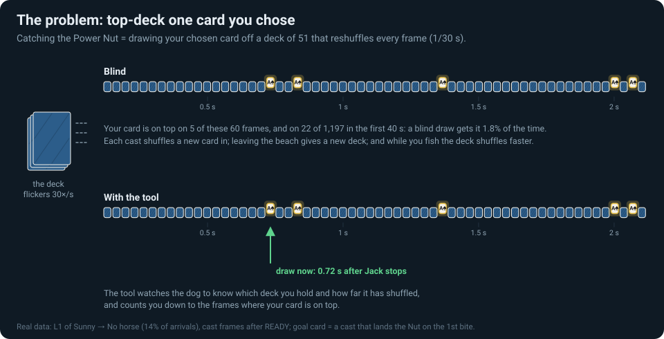

Catching the Power Nut is like drawing one card you picked beforehand — the ace of spades, say — from a shuffled deck of 51. But you cannot draw whenever you like. You draw by casting: the game frame you press B on (1/30 s) picks the cast, and with it every bite that will come. Then you hold B and wait. Each bite gives you 0.33 s to let go of B and pull in; let go early, late, or hold on through it, and that card is gone. Which bite is your card, you cannot see.
The deck never holds still. Every frame it reshuffles with the game's random number, so a cast one frame earlier or later is another cast with other bites. Each arrival at the beach hands you a different deck (a different dog line), and you get one cast from it: whatever that cast brings, the next try is a new arrival and a new deck. Cast blind and your card comes up a few times in a hundred at best (the Power Nut is the 1st bite on 1.8% of the cast frames of the most common dog line; 1 in 51 is the game's base chance per catch).
The tool is a way around that: by watching the dog it works out which deck you are holding and how far it has shuffled, counts you down to the frame to press B on, and tells you which bite to let go at — for the Power Nut, or a big fish, whenever you need it.

Try it with a deck of cards →Open the tool (hub)
The deck page runs at the game's own speed on real casts from the lab's tables: Start when Jack stops, press and hold to cast, and watch the big card: it is your bobber, glowing at every bite while one face-down card lights up with it; let go then. Tick show RNG speed to see the deck change with every step of the game's random number: once per game frame at the pier (30 a second), three times per frame while the line is in the water waiting for a bite (90 a second: the game rolls a 1-in-401 bite check every frame). How the tool finds your deck: How it works.